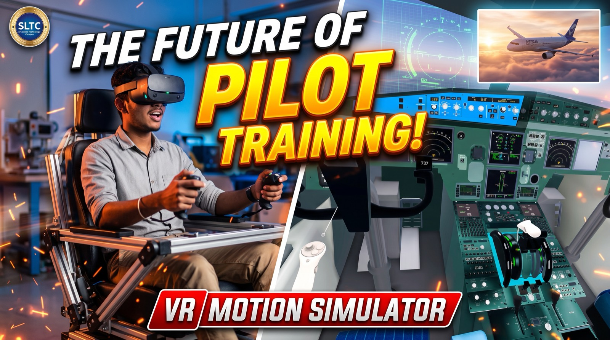

VR Flight Cockpit
Taking flight, without the multi-million-dollar simulator hall.
For over a century, people have looked to the skies in awe, dreaming of taking the controls of an airliner and soaring into the clouds. Pilot training, though, has long been locked behind the high walls of multi-million-dollar simulator facilities.
This project breaks that barrier by pairing virtual reality with a compact, intelligent motion platform, bringing the complete sensation of flight down to earth — and within reach of enthusiasts, students and everyday dreamers.
- Step inside the flight deck
- Slipping on the headset places you at the command of an Airbus A320 cockpit, surrounded by over 700 intricately crafted flight instruments, glowing panels and responsive avionics.
- Feel the rush of flight
- A 3-degree-of-freedom motion seat moves with the critical moments of the journey: tilting back on take-off rotation, shifting through turbulent storms, and delivering the physical jolt of touchdown.
- Designed for every future pilot
- Pointer-based controls and spoken, step-by-step guidance let anyone take off, navigate changing weather and land smoothly — from a child touching aircraft controls for the first time to a lifelong aviation enthusiast.
Developed by S.G.H.K. Samarakoon and M.A.D. Chathuranga, Faculty of Engineering, Sri Lanka Technology Campus.
It is not just a flight simulator. It is a gateway to the skies, proving that the thrill of aviation belongs to everyone.